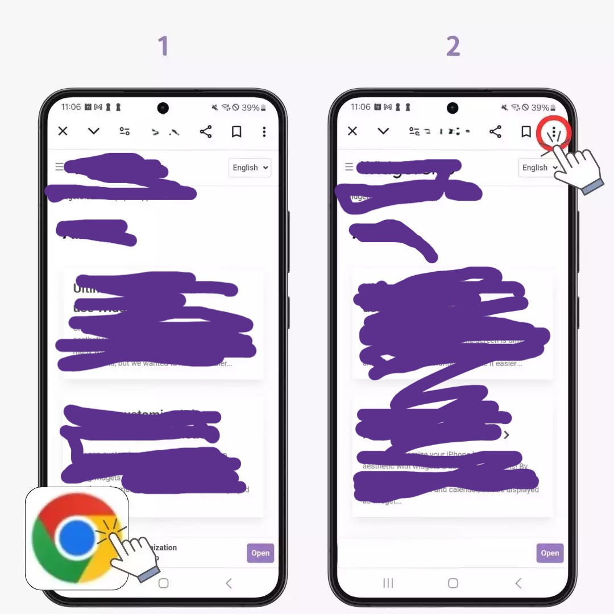
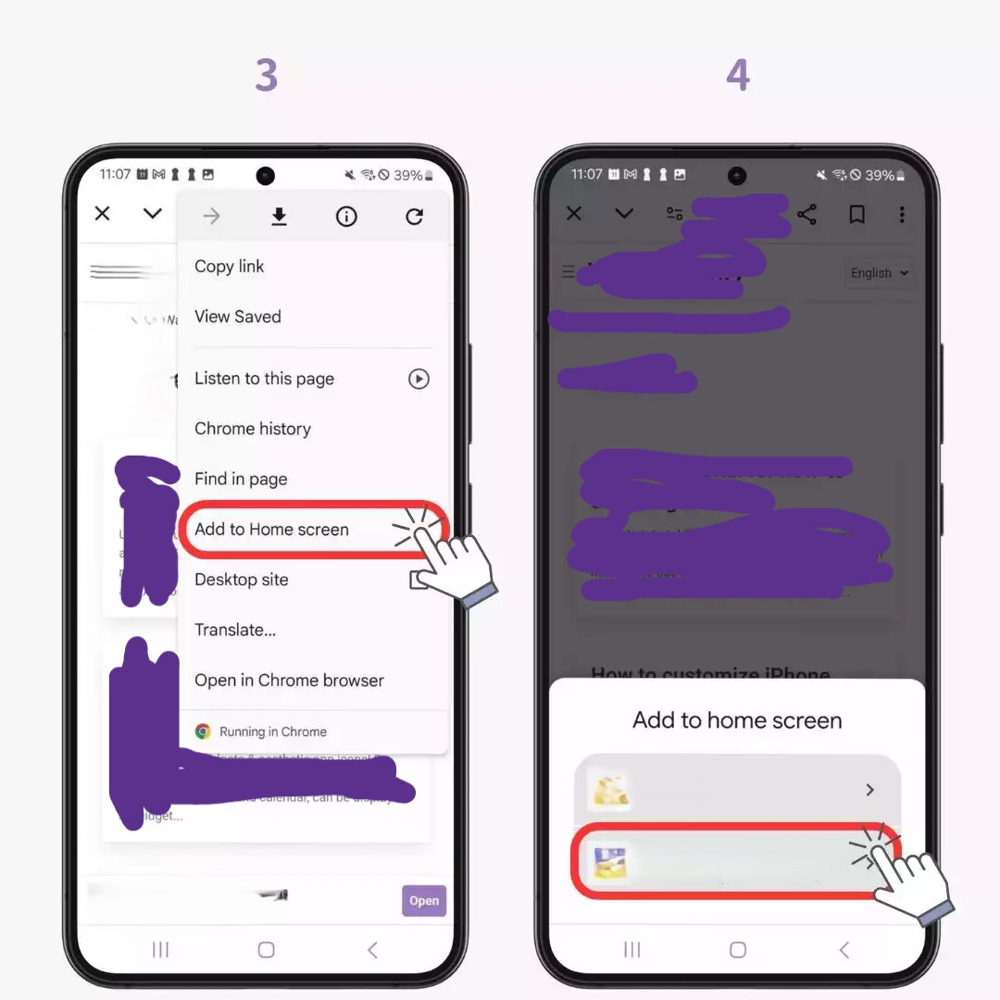
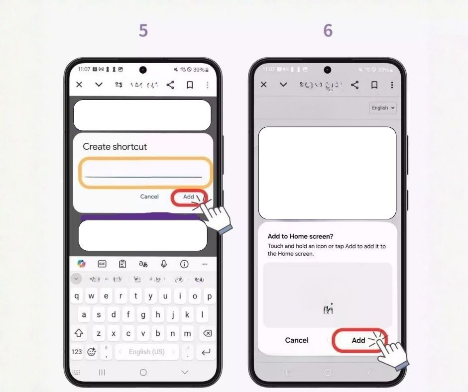

ثبت تطبيقنا الان
اختر جهازك ومتصفحك… واتبع الخطوات البسيطة - وثبت الموقع كتطبيق
- عربي
- English
أندرويد — Google Chrome
- افتح الموقع في Chrome. مهم: الصفحة الرئيسية اللي هي رابط الموقع الاساسي اللي عايز تثبته مفتوح وتكون فاتح من المتصفح الاساسي كروم او فايرفوكس..... وليس من متصفح داخل تطبيقات السوشيال
- اضغط زر القائمة ⋮ أعلى المتصفح.
- اختار إضافة إلى الشاشة الرئيسية أو Install app.
- أكد الاسم واضغط إضافة / Install.
- وانتظر ثواني وسوف يثبت التطبيق ويظهر في التطبيقات والشاشة الرئيسية - ملحوظة الرجاء الغاء خيار قفل تخطيط الشاشة الرئيسية عند التثبيت لكل يثبت التطبيق ويظهر ويعمل بطريقة صحيحة
- شرح بسيط لتثبيت تطبيقنا في اندرويد من متصفح كروم:   
لو ما ظهرتش “Install”: جرّب تحديث الصفحة، أو افتحها من نفس الدومين (بدون
متصفح داخل تطبيقات السوشيال).
آيفون — Safari
- افتح الموقع في Safari (مش كروم).
- اضغط زر المشاركة (مربع وسهم ↑) أسفل/أعلى الشاشة.
- انزل و اختار إضافة إلى الشاشة الرئيسية.
- أكد الاسم واضغط إضافة.
- شرح بسيط لتثبيت تطبيقنا في الايفون من متصفح سفاري:

لو خيار “إضافة إلى الشاشة الرئيسية” مش ظاهر: تأكد إنك فاتح من Safari
مباشرة، ومش من متصفح داخل تطبيق.
كمبيوتر ويندوز — Chrome / Edge
- افتح الموقع في Chrome أو Edge.
-
من شريط العنوان:
- افتح القائمة العلوية بجانب زر الهوم اللي فوق او اضغط على الثلاث نقط/خطوط "⋮ / ..." وانزل بالقائمة لخيار المزيد من الادوات واضغط على خيار التطبيقات اضغط على تثبيت الموقع كتطبيق وهكذا قمت بتثبيت تطبيقنا
-
شرح بسيط لتثبيت تطبيقنا في ويندوز:

لو مفيش زر تثبيت: غالبًا الموقع مش مفعّل كـ PWA بالكامل (Manifest + Service
Worker + HTTPS).
ماك — Safari / Chrome
Safari
- افتح الموقع في Safari.
- من القائمة: File ثم Add to Dock (إن كانت متاحة).
- أكد الاسم واضغط Add.
Chrome
- افتح الموقع في Chrome.
- من القائمة ⋮ اختر Install app.
- اضغط Install.
اختلاف الخيارات على الماك بيكون حسب إصدار macOS وSafari/Chrome.